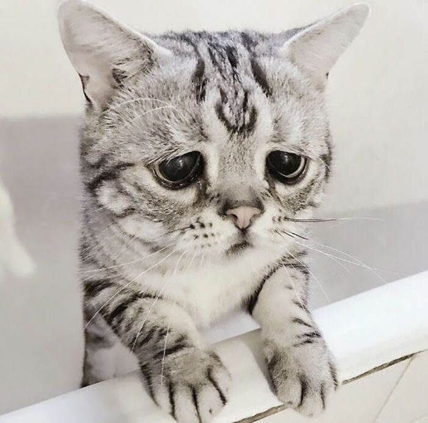

О себе
Меня зовут Арсений. Я родился в Самаре и учился в СНИУ на факультете Информационная безопастность автоматизированных систем.
У меня есть несколько хобби, такие как программирование, киберспорт и обработка фото. Один из интересных фактов из моей жизни - я сдал ЕГЭ по информатике на языке C#.
Какие фильмы мне нравятся
- Веном: Последний танец
- Гладиатор 2
- Переводсик
- Дэдпул и Росомаха
Какая музыка мне нравится
- Рок
- Джаз
Как связаться со мной
Вы можете связаться со мной через мои соцсети: Вконтакте или Telegram.
